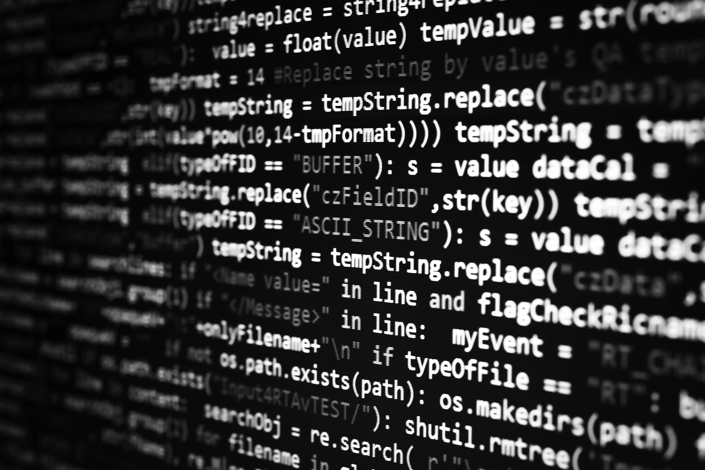

UTS Algoritma Pemrograman
Stevin Yustisio - 321910010 |

Topik 1 - Menentukan Bilangan Ganjil atau Genap
Deskripsi:
1. Mulai 2. Input Bilangan 3. Bilangan Dibagi 2 ? 4. Ya/Tidak 5. Selesai
Flowchart:

Implementasi C++:
#includeusing namespace std; int main() { int bilangan; cout << "Masukkan bilangan: "; cin >> bilangan; if (bilangan % 2 == 0) { cout << "Bilangan " << bilangan << " adalah Genap." << endl; } else { cout << "Bilangan " << bilangan << " adalah Ganjil." << endl; } return 0; }
Topik 2 - Menghitung Rata-rata dari N Bilangan
Deskripsi:
1. Mulai 2. Input jumlah bilangan 𝑁 3. Input bilangan 4. Tambahkan bilangan ke total 5. Hitung rata-rata = total / N 6. Tampilkan rata-rata 7. Selesai
Flowchart:

Implementasi C++:
#include <iostream>
using namespace std;
int main() {
int N;
float total = 0, bilangan, rataRata;
cout << "Masukkan jumlah bilangan N: ";
cin >> N;
for (int i = 1; i <= N; i++) {
cout << "Masukkan bilangan ke-" << i << ": ";
cin >> bilangan;
total += bilangan;
}
rataRata = total / N;
cout << "Rata-rata dari " << N << " bilangan adalah " << rataRata << endl;
return 0;
}
Topik 3 - Menghitung Luas Persegi
Deskripsi:
Mulai 1. Input panjang sisi (𝑠) 2. Hitung luas = 𝑠×𝑠 3. Tampilkan luas 4. Selesai
Flowchart:

Implementasi C++:
#include <iostream>
using namespace std;
int main() {
float s, luas;
cout << "Masukkan panjang sisi persegi: ";
cin >> s;
luas = s * s;
cout << "Luas persegi dengan sisi " << s << " adalah " << luas << endl;
return 0;
}
C++ Code Editor
Coba editor kode C++ sederhana ini:
© Stevin Yustisio - 321910010